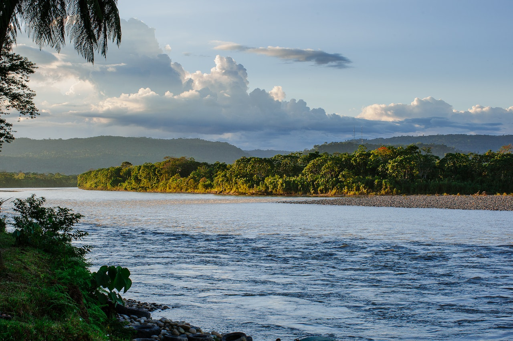
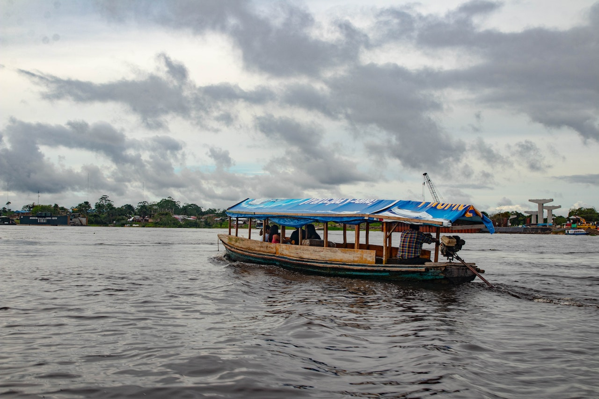
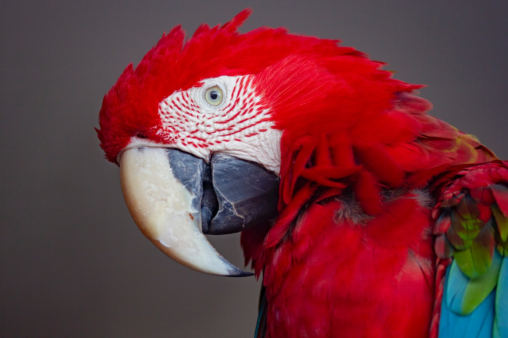

AMAZÔNIA
Considerada a região de maior biodiversidade do planeta, o bioma Amazônia
é de extrema importância para a manutenção do equilíbrio ambiental do mundo.

Amazônia é um dos biomas brasileiros e abrange territórios de países vizinhos. Conhecido como bioma de maior biodiversidade do mundo, a Amazônia possui diversas particularidades, que a diferem de todos os outros, com relação a sua vegetação extremamente densa, a sua fauna e flora diversificada ou a seus rios extensos e de extrema importância para o país.
CLIMA
Amazônia é uma região bastante úmida e quente, e isso deve-se à existência das florestas, que, por meio da evapotranspiração, perdem água para o meio ambiente. O Oceano Atlântico também é responsável por essa umidade elevada. O Clima predominante é o equatorial úmido, com temperatura média de 27,9 ºC, durante a estação de menor umidade, e de 25,8 ºC, na estação de maior pluviosidade. A umidade do ar chega a 88% na época das chuvas intensas, contudo, mesmo na estação seca, essa permanece elevada, chegando a 77%. Em relação à pluviosidade, chove na Amazônia cerca de 1.500 mm a 3.000 mm todos os anos, segundo a WWF Brasil.
VEGETAÇÃO
Quando se fala no bioma Amazônia, referimo-nos diretamente à maior floresta tropical do mundo: a Floresta Amazônica. Aproximadamente, 22% das espécias nativas do mundo encontram-se nesse bioma e, especificamente, na floresta, que abrange uma área de cerca de cinco milhões de km2. Além da densa Floresta Amazônica, o bioma também conta com muitos outros ecossistemas, como as várzeas (florestas alagadas) e as savanas, e com um complexo sistema hidrográfico. As florestas contínuas correspondem a, aproximadamente, 3.650.000 km².
RESUMO
O bioma da Amazônia:
- abrange a maior bacia hidrográfica do mundo, bem como a maior floresta tropical.
- é considerado o conjunto de ecossistemas de maior diversidade do planeta.
- abriga milhares de espécies de animais e vegetais, entre catalogados e desconhecidos.
- tem em sua flora um enorme potencial medicinal, atraindo olhares do mundo todo.
- é responsável não só pelo equilíbrio ambiental do Brasil mas também influencia toda a dinâmica climática da Terra.
- tem sido cada vez mais desmatado, apesar de sua tamanha importância.
- tem perdido sua cobertura vegetal em diversas áreas, alterando não só as condições climáticas da região como também colocando em risco toda a biodiversidade.
CURIOSIDADES
- A Amazônia é considerada, pela Unesco, patrimônio natural da humanudade.
- O Rio Amazonas, alimentado por milhares de afluentes, despeja no Oceano Atlântico cerca de 200 milhões de litros de água doce por segundo.
- O maior animal da fauna amazônica é o peixe-boi, com cerca de meia tonelada e até três metros de comprimento.
- No Rio Amazonas, é encontrado o maior peixe de água doce do mundo, o pirarucu.
- O Dia da Amazônia é comemorado em 5 de setembro.